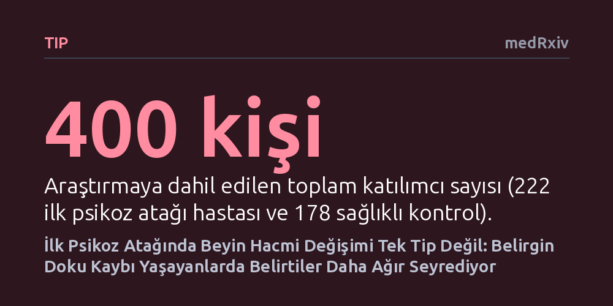

TIP · medRxiv · 2026-10-15
Araştırmacılar, ilk psikoz atağını geçiren hastalarda beyin gri cevher hacminin zaman içindeki değişim kalıplarını ve bunların klinik önemini inceledi. İnceleme sonucunda beyin değişiminin tek tip olmadığı, belirgin hacim kaybı yaşayan grupta işlevselliğin daha düşük ve negatif belirtilerin daha ağır olduğu görüldü.
Psikozun erken evresinde tüm hastaların beyninde aynı biçimde doku kaybı yaşandığı varsayımını çürüterek, farklı yapısal değişim kalıplarının farklı klinik gidişatlarla ilişkili olduğunu gösterir.

Psikiyatri araştırmalarında uzun yıllardır şizofreni ve ilişkili psikotik bozuklukların erken döneminde beyin dokusunda bir miktar kayıp yaşandığı kabul edilir. Ancak bu tespit genellikle hastaların tümünün ortalaması alınarak yapılan karşılaştırmalara dayanır. Ortalama değerlere odaklanmak, biyolojik açıdan birbirinden çok farklı süreçler yaşayan hastaları aynı kefeye koyma riskini beraberinde getirir; bazı bireylerde belirgin bir gerileme olurken diğerlerinde durum tamamen sabit kalabilir.
Bu çalışmayı yürüten araştırmacılar, ilk psikoz atağının ardından beyin gri cevherindeki hacimsel değişimin herkes için tek bir şablona uyup uymadığını sorguladı. Amaç, erken dönemdeki yapısal değişim kalıplarını bağımsız olarak sınıflandırmak, bu kalıpların farklı merkezlerde tekrarlanıp tekrarlanmadığını sınamak ve beyindeki bu anatomik hareketliliğin hastanın günlük yaşamdaki işlevselliğiyle örtüşüp örtüşmediğini ortaya çıkarmaktı.
Çalışma, Çekya'da yer alan iki ayrı klinik merkezde 2011 ile 2026 yılları arasında yürütülen ileriye dönük bir kohort araştırmasına dayanıyor. İncelemeye ilk psikoz atağını geçirmiş 222 hasta ile yaş ve merkez bakımından bu hastalarla eşleştirilmiş 178 sağlıklı birey dahil edildi. Katılımcıların beyin yapıları, başlangıçta ve ortanca değeri yaklaşık 13 ay olan takip süresinin sonunda yüksek çözünürlüklü manyetik rezonans görüntüleme (MRG) ile tarandı.
Araştırmacılar tanı etiketlerini bilmeksizin, beynin 333 ayrı kortikal bölgesindeki yıllık gri cevher hacim değişimini matematiksel kümeleme yöntemleriyle analiz etti. İki ayrı merkezdeki veriler bağımsız olarak incelenerek benzer biyolojik kümelerin her iki veri setinde de kendiliğinden ortaya çıkıp çıkmadığı sınandı. Ardından voksel tabanlı morfometri ile beyindeki doku kayıpları ve ventrikül (beyin boşluğu) genişlemeleri milimetrik düzeyde haritalandı.
Analizler her iki merkezde de birbirinden bağımsız olarak üç ana kümenin varlığını gösterdi: hacmi hemen hemen sabit kalanlar (C1), belirgin doku kaybı yaşayanlar (C2) ve hacim artışı sergileyenler (C3). İki merkez arasındaki küme benzerliği özellikle doku kaybı ve doku artışı gösteren gruplarda son derece güçlü çıktı (sırasıyla 0,865 ve 0,861 korelasyon). Bu tutarlılık, hastaların beyinlerindeki değişimin rastlantısal olmadığını kanıtladı.
Tüm katılımcılar birleştirildiğinde, belirgin gri cevher kaybı yaşayan C2 grubunda 66 hasta ve 16 sağlıklı kontrol yer aldı. Özellikle çağrışım korteksinde yoğunlaşan bu doku kaybına, beyin karıncıklarındaki (ventriküllerdeki) belirgin genişleme eşlik etti. Daha da önemlisi, bu gruptaki hastalar takip döneminde en düşük genel işlevsellik düzeyini ve en ağır negatif belirtileri (duygusal ve sosyal içe kapanma) sergiledi. Buna karşılık C3 grubundaki hastalarda iki taraflı ventral temporal bölgede hacim artışı saptandı.
Elde edilen veriler, erken psikoz döneminde beyindeki yapısal değişimin homojen olmadığını ve en az iki zıt yön barındırdığını gösteriyor. Beyin dokusunda belirgin azalma yaşayan alt grubun klinik olarak daha olumsuz bir tablo sergilemesi, yapısal biyobelirteçlerin gelecekte hastalığın seyrini öngörmede ve kişiye özel tedavi planlamada kullanılabileceğine işaret ediyor.
Yine de bulguları değerlendirirken temkinli olmak gerekir. Bu araştırma henüz hakem denetiminden geçmemiş bir önbaskıdır ve sonuçların bağımsız çalışma gruplarınca doğrulanması şarttır. Ayrıca 13 aylık takip dönemi hastalığın uzun vadedeki seyrini anlamak için sınırlı bir süredir ve gruplar arasındaki klinik belirti değişim hızının başlangıca kıyasla istatistiksel olarak farklılaşmaması, doku kaybı ile belirti şiddeti arasındaki ilişkinin karmaşıklığını koruduğunu göstermektedir.